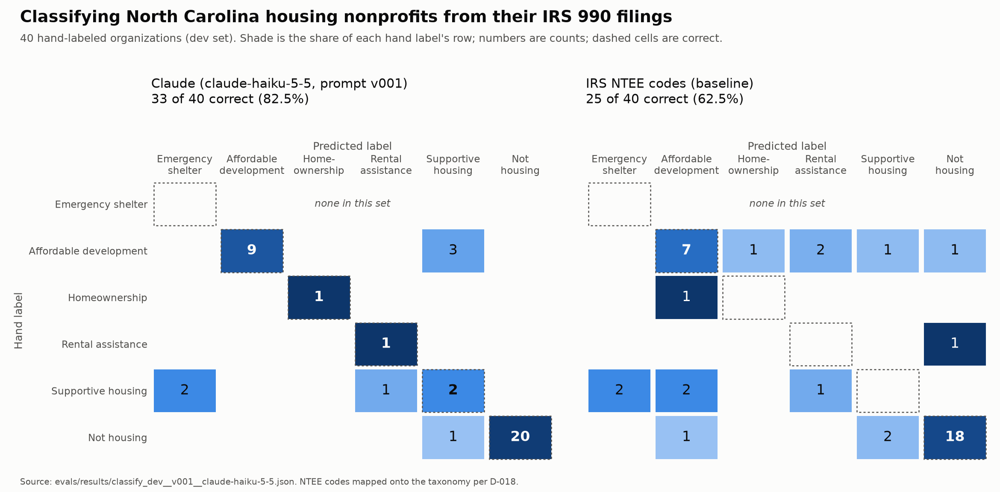
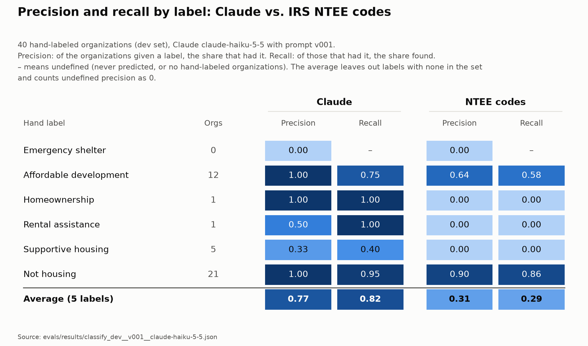

Finding the housing nonprofits a funder should know about
Claude reads the IRS Form 990 filings of North Carolina nonprofits and sorts them by the housing work they actually do. On a first set of 40 hand-labeled organizations, it beat the IRS's own subject codes.
Each window is one organization. Lit windows were classified correctly against my hand labels. Dev set, prompt v001.
Funders map their field from memory
Foundations increasingly want system-wide strategies: funding a set of organizations that together address an issue like housing across a region. To do that, they need to know who is doing the work.
There's no standardized, complete list. So funders rely on who has applied before, who board members know, and who shows up at convenings. That picture misses the organizations with the fewest resources to engage with philanthropy, often the ones a system-wide strategy most needs to reach.
The public data to start filling the gap exists, since the IRS releases every e-filed Form 990. But the IRS's subject codes (NTEE) are coarse and often wrong, what an organization actually does is buried in free text, and the raw files are large zipped XML.
Claude reads the filings
Claude reads each organization's mission and program descriptions and assigns one of six labels: emergency shelter, affordable housing development, homeownership, rental assistance, supportive housing, or not housing. For a funder, that means finding the right organizations before an RFP is written, and seeing which kinds of work a portfolio is missing.
Find candidates. Start from the IRS Business Master File for North Carolina and select organizations in housing and adjacent categories.
Pull only the filings needed. Match them to the IRS index files, keep the latest filing per organization and year, and extract just those XML files from the zipped releases.
Parse and load. Turn the XML into filing, program, and financial tables in DuckDB.
Classify. Send each organization's mission and program text to Claude with a versioned prompt. Responses must be one label from the fixed taxonomy, and every response is cached so results can be reproduced.
Evaluate. Score Claude and the NTEE codes against 100 organizations I labeled by hand, split into a dev set for prompt work and a test set scored once at the end.
First results, on the dev set
| Correct | Avg. precision | Avg. recall | |
|---|---|---|---|
| Claude | 33 of 40 | 0.77 | 0.82 |
| NTEE codes | 25 of 40 | 0.31 | 0.29 |
- NTEE codes can't tell types of housing work apart. They scored zero on homeownership, rental assistance, and supportive housing, the distinctions a funder needs.
- Claude's errors cluster around supportive housing, the line between housing with services and housing alone. That's where the next prompt version will focus.
- Claude rarely confuses housing with non-housing: 20 of 21 non-housing organizations were labeled correctly.
These are early numbers. The dev set is small (some labels have one organization), it guides prompt work so it will flatter later versions, and I'm the only labeler. The 60-organization test set will be scored once, with the final prompt.


What I'm claiming, and what I'm not
This project is
- A technical prototype of an applied AI use case for philanthropy and nonprofits.
- A demonstration of LLM engineering: a fixed taxonomy with validated output, versioned prompts, cached and reproducible API calls, a hand-labeled eval with a dev/test split, a baseline to beat, and error analysis that drives prompt changes.
- A real-world problem from a sector I work in, scoped from a funder's question to a measurable result.
- A build with Claude Code, kept consistent by project rules, hooks, tests, and a decision log.
This project isn't
- A demonstration of hand-written Python. Claude Code wrote most of the code under my direction. I worked in Python with IRS data, including Form 990 filings, at Deloitte; my work since has been mostly in R. I read and reviewed the code here.
- A finished client-facing product. There's no interface yet, the eval set is small, and results haven't been reviewed with funders.
- A complete census. The smallest nonprofits file the 990-N postcard, which has no mission text, so some of the least-resourced organizations are still invisible here.
What I did
Framed the problem from my work with funders and nonprofits; designed the taxonomy, the labeling guide, and the eval; hand-labeled 100 organizations blind to their NTEE codes; made and logged the design decisions; and directed and reviewed the build.
Next: a landscape agent
Stage 2 gives Claude a read-only SQL tool over the cleaned data, so a program officer can ask, for example, which organizations in the Cape Fear region provide supportive housing and how their revenue has changed. All arithmetic happens in SQL, and an automated check confirms every number in a brief came from a query the agent actually ran.